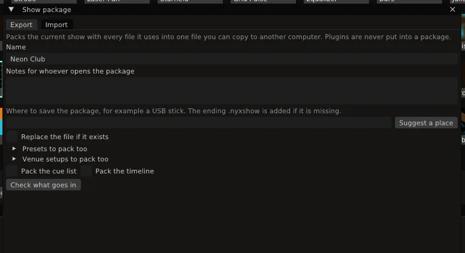
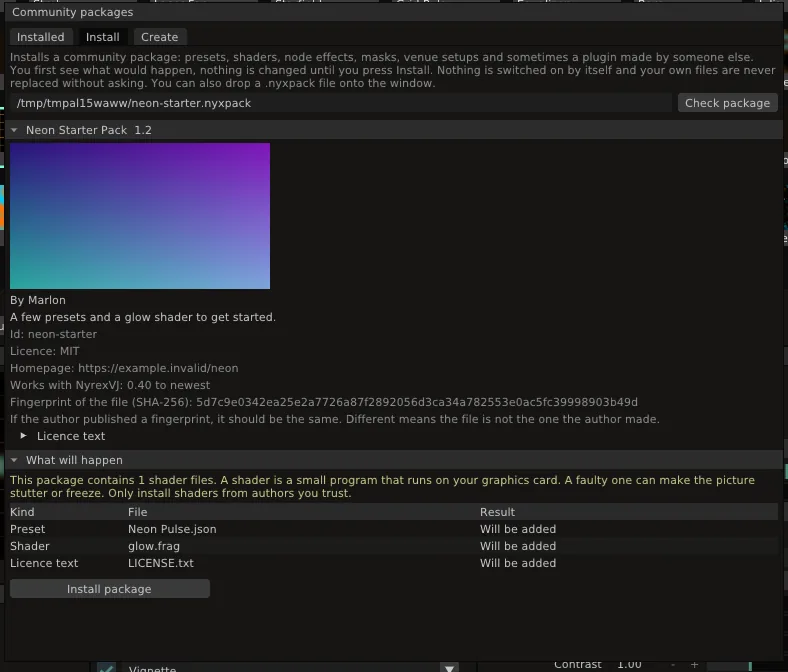

Contents
Getting started
- Welcome to NyrexVJ
- Installing and first start
- The window at a glance
- Your first show in five minutes
Playing visuals
- The clip grid
- Decks and transitions
- Layers and blending
- The Clip window
- Effects
- The Library
- Presets and sessions
- The Master window
Music and motion
Your own content
- Video and image clips
- Your own shaders
- 3D models
- The Clip Creator
- Text, particles and effect chains
- The node effect editor
- Live sources: Spout, NDI and cameras
Output and recording
Live control and shows
- Control: MIDI, OSC and the web page
- Show sync and timecode
- The show timeline
- Stage: DMX, VRSL and VRChat
- Plugins
Reference and help
Manual / Playing visuals
Presets and sessions
#Factory looks
The Presets tab starts with the factory looks. A click loads the look into the current deck, a right click lets you load it into another deck. There are 18: Neon Club, Milky Red, Crystal Cavern, Crystal Lines, Acid Rainbow, Deep Space, Synthwave Night, Laser Show, Minimal Mono, 3D Showcase, Warp Tunnel, Audio Reactor, Fractal Dream, Cyber Rain, Inferno, 3D Worlds, Crystal Cube and Pop Art.
The button Fill the decks with factory looks puts 16 looks into the 16 decks, a quick way to have something for every mood.

#Your own presets
Under Save current look, type a name and press Save. A saved preset contains all 16 decks, with their layers, clips, effects, colours, the master, macros and LFOs and the tempo settings. The list My presets shows what you saved. A click loads a preset, and a right click gives Overwrite with current and Delete.
File, Save as preset does the same from the menu. Presets are small files in the presets folder, so you can copy them to another computer.
#The session
Besides presets, NyrexVJ keeps a session: the state of the program as you left it. On the next start it opens exactly like that, unless you turn off Restore last session on start in Settings, General. The session is saved every 30 seconds when something changed, and a rotating set of the last ten autosaves is kept in the recovery folder.
#Show packages
A show package is one file that holds your current show and every file it uses, so you can take it to another computer on a USB stick. It ends in .nyxshow. Use it when you play at a venue, when you move to a new computer or when a friend should open the same show. Presets and sessions alone only remember clips by name; a package brings the clips themselves.
Making a package. File, Export show package opens the Show package window on the Export tab.
- Give the show a name and, if you like, notes for whoever opens it.
- Choose where to save. The button Suggest a place fills in a file in the shows folder of the data folder. The ending
.nyxshowis added if it is missing. - Open Presets to pack too and Venue setups to pack too and tick what should travel with the show. Pack the cue list and Pack the timeline add those two files.
- Press Check what goes in. NyrexVJ looks through the show, finds every clip and effect it uses and lists the files: the kind, the size, what needs the file and a field for a note.
- Press Create the package. A progress bar shows the work and Cancel stops it, leaving no half written file.
Files that are missing, too large for a package or have a name that cannot be used are listed and left out, and you see why. Nothing is replaced behind your back, and built-in clips and effects are not packed because every NyrexVJ has them.
Source and licence. NyrexVJ cannot know whether you may pass a file on. Write where a file comes from or its licence in the last column. The note is stored in the package and shown to whoever imports it, and the window tells you how many media files have none.
What is never in a package. Plugins are never put into a package. The package only lists their names, and the other computer must have them installed. This way opening a package can never start code that came from the package. Live sources such as Spout, NDI and cameras are listed too, but they come from the other computer.
Opening a package. Use File, Import show package, or drop a .nyxshow file on the NyrexVJ window. The window opens on the Import tab and checks the package. It tells you, file by file, what would happen: will be added, already here and the same, you have a different file, not in the package, or the name cannot be used. Nothing is changed until you press Import.
If a file with the same name is already on your computer you choose what happens:
- Keep mine leaves your file alone. This is the default.
- Keep both copies the new file under a name such as
loop (2).mp4and changes the show to use it. - Replace mine, save it first copies your file to the
show_backupsfolder and then replaces it.
Two more ticks, Also replace my cue list and Also replace my timeline, are off by default. A replaced cue list or timeline is used after the next start of NyrexVJ.
When the import is done you see how many files were added, renamed, replaced and kept. Open the show makes it the current show, and Open the folder with the saved files shows your old files if you chose Replace. If anything goes wrong halfway, everything is put back as it was and the window says so.
Clips that are missing. If a clip or effect of the show is not in the package and not on your computer, its cell stays empty and the window lists it. NyrexVJ never puts a different clip there. If the files are on a drive you have, use Find missing files: point to a folder, for example the original media drive, and NyrexVJ searches it. Only files that are exactly the same as the ones the package knew are ticked. A file that only has the same name is shown, not ticked, and marked that its content cannot be checked, so you decide. Press Copy the ticked files to bring them in.
Safety. A package is only data. Every file in it has a checksum that is checked before anything is moved into place. File names must be plain names without folders, and the folder is chosen by the kind of file, so a package cannot write outside the data folder. Only the usual file endings of each kind are accepted, every kind has a size limit, and files are stored without compression, so a small package cannot unpack into something huge. A package from a newer version of NyrexVJ, a package that is cut off or damaged and a package with anything that does not add up is refused, and nothing on your computer is changed.


#Community packages
A community package is one file that ends in .nyxpack. Somebody made presets, shaders, node effects, masks, venue setups or a plugin and put them into it so you can install them in one step, update them later and remove them again. It is not the same as a show package: a show package moves your own show to another computer, a community package is something you install from somebody else.
Installing a package. File, Install community package opens the Community packages window on the Install tab. You can also drop a .nyxpack file on the NyrexVJ window.
- Type or paste the path of the file and press Check package.
- Read the top of the page: the name and version, the picture the author added, who made it, the licence, which NyrexVJ versions it was made for, and the fingerprint of the file. If the author published a fingerprint, compare it. A different value means the file is not the one the author made.
- Open Licence text to read the licence the author wrote down.
- Under What will happen you see every file and what would be done with it: will be added, will be updated, already installed and unchanged, you already have this file, or a different file with the same name. Nothing is changed yet.
- Read the hints above the table. Red hints stop the installation and say what to do. Yellow hints need your consent or are good to know.
- Press Install package. A progress bar shows the work and Cancel stops it.
What can stop an installation. A package that was made for other versions of NyrexVJ, a package that needs another package you have not installed, a package that needs a newer version of another package than you have, a package that would break a package you already have, a file that another package owns and a folder that sits where a file should go. Each of these is explained in plain words in the window and nothing is installed until it is solved.
Files that differ. If you already have a file with the same name but other content, the installation does not go on until you choose. Keep my files leaves yours alone and does not install the package's copy. Replace my files, mine are saved first moves yours to the package_backups folder and then puts the new one in place. A file that is exactly the same is left alone.
Older versions and updates. If a newer version of the package is already installed, the window says so and asks you to tick Install the older version anyway. If you install a newer version, it is an update: the old files of the package that the new version no longer has are moved to the backup, and files you changed yourself stay where they are. If something goes wrong halfway, everything is put back as it was and the window says so.
Shaders. A shader is a small program that runs on your graphics card. A faulty one can make the picture stutter or freeze. The window tells you how many shader files a package has. Only install shaders from authors you trust.
Plugins. A package can hold a plugin. A plugin is a program that runs inside NyrexVJ with the same rights as NyrexVJ, so the window asks you to tick I trust the author and want to install this plugin, and does not go on without it. Even then the plugin is only copied. It stays switched off until you switch it on yourself in Settings, Plugins, where the usual safety rules apply: the time budget, the crash marker and safe mode. A package can never switch a plugin on, and a plugin that was stopped for crashing stays stopped. A plugin has to be switched off before you update or remove it. --no-plugins still switches all plugins off for a run.
Seeing and removing what is installed. The Installed tab lists the packages with their version, author and licence and the files that belong to each. Remove... moves the files of a package to the package_backups folder instead of deleting them. A file you changed after installing it stays. A package that another package needs cannot be removed. Open backup folder shows what was moved.
Making a package. The Create tab packs a folder. The folder needs a pack.json with the id, name, version and licence, and can have the folders presets, shaders, nodes, masks, venues and plugin, a preview.png and a LICENSE.txt. The id uses lower case letters, digits and -, _ or ., and the version has up to four numbers such as 1.2. Dependencies list the ids and the oldest version of other packages the package needs. Type the folder and where the package should be saved, tick Replace the file if it exists when a package of that name is already there, and press Create package. Problems in the folder are listed and nothing is written until they are fixed. Videos, models and scene packs do not go into a community package, use a show package for them.
{
"id": "neon-starter",
"version": "1.2",
"name": "Neon Starter Pack",
"author": "Your name",
"description": "A few presets and a glow shader.",
"license": "MIT",
"nyrexvj": { "min": "0.40", "max": "" },
"dependencies": []
}Safety. A package is only data. Every file has a checksum that is checked before anything is moved into place. File names must be plain names without folders and the folder is chosen by the kind of file, so a package cannot write outside the data folder. Files are stored without compression and every kind has a size limit, so a small package cannot unpack into something huge. A package that is cut off, changed, too large, in a newer format or in the wrong format is refused and nothing on your computer is changed. Packages are not signed: the fingerprint shows that a file is the one somebody published, not that its content is safe. There is no online catalogue, you get a package from somebody and install it yourself.


#Undo and redo
Edit, Undo and Redo, or Ctrl+Z and Ctrl+Y (Ctrl+Shift+Z also redoes), step through your changes to sliders, clips, effects and decks. Playing a clip, triggering a column and moving the macro knobs are performance actions and are not part of undo. In the timeline and the node editor the same keys work on their own history while those windows have the focus.
Found a mistake or something missing? Tell us on GitHub. The same manual is built into the program, so you have it without internet. Open it with F1 or from the Help menu, then User manual.